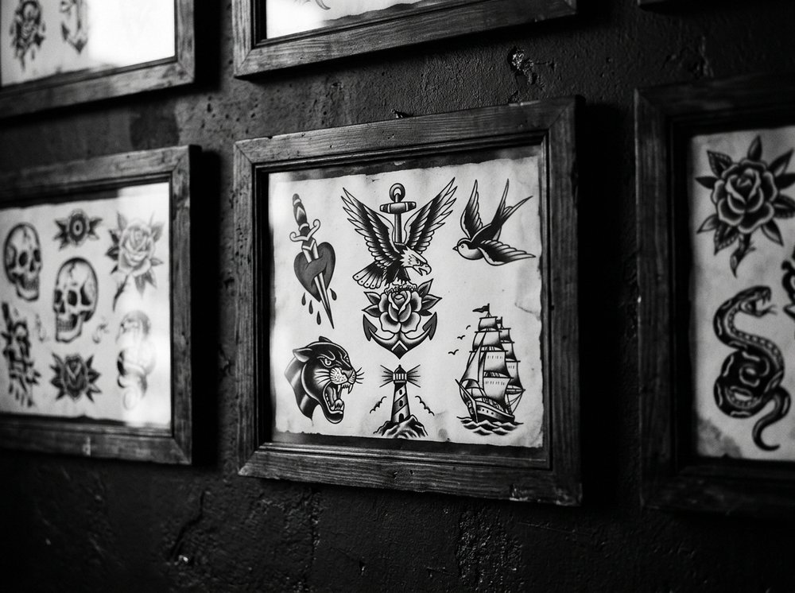

484 Cherry St · Downtown Macon, GA
Custom tattoos, walk-in flash, and clean body piercing on Cherry Street. Eight resident artists serving Macon and Middle Georgia for over a decade.

Custom Tattoos & Cover-Ups
One-of-a-kind sleeves, color anime, traditional, blackwork, and thoughtful reworks.

Walk-Ins & Classic Flash
Spontaneous Cherry Street pieces, palm-sized flash, and crisp script whenever a chair is free.
Body Piercing
Clean, single-use body piercings in downtown Macon. Call (478) 259-1829 for daily availability.
Cherry Street Roots · Regional Reputation
Proudly Tattooing Middle Georgia.
From first-time walk-ins to full custom sleeves, collectors make the drive to 484 Cherry St in downtown Macon from across Central Georgia:
- Downtown Macon
- Bibb County
- Warner Robins
- Milledgeville
- Forsyth
- Gray
- Byron
- Perry
Over a Decade on Cherry Street
Who We Are.
10+ years downtown, eight very different artists under one roof, zero shop-snob attitude whether it's your first walk-in flash piece or a multi-session custom sleeve.
From the Parlour
Recent Work.
Click any piece to inspect linework and saturation in full screen, or browse each artist's Instagram for daily healed and fresh uploads.
The Roster
Eight Resident Artists.
Explore individual artist profiles, check their latest flash and custom work on Instagram, or request a specific seat directly.


Hours & Walk-Ins
Open Five Days.
✦Tue–Thu 1–8 PM · Fri–Sat 1–10 PM
- Tue – Thu1:00 PM – 8:00 PM
- Fri – Sat1:00 PM – 10:00 PM
- Sun – MonClosed
Walk-ins are welcome Tuesday through Saturday whenever a chair is open. Call (478) 259-1829 for real-time walk-in and piercer availability.
Find the Parlour
484 Cherry St, Macon.
Right on downtown Macon's Cherry Street corridor (GA 31201), minutes from Mercer University with convenient street parking along Cherry St and surrounding downtown blocks.
- Studio & Owners
- Tooth & Nail Tattoo Parlour · Kevin Dixon & Ricky Lester
- Address & Phone
- 484 Cherry St, Macon, GA 31201 · (478) 259-1829
- Services
- Custom tattoos, walk-in flash, cover-ups & body piercing
- Service Area
- Downtown Macon, Mercer Univ., Warner Robins, Forsyth & Middle GA
484 Cherry St · Downtown Macon, GA
Walk In Today or Plan Your Custom Piece.
Stop by Cherry Street Tuesday through Saturday while chairs are open, or send your concept ahead of time so we can match you with the right artist.